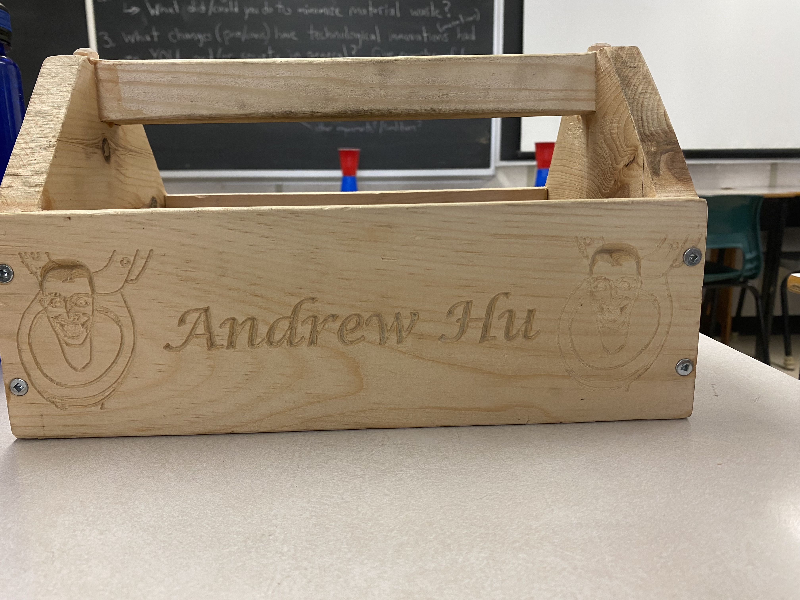

The Tool Tote
The tool tote project is the first project that I created in Gr 9 tech. It uses many machines and tools in the wood shop as well as the CNC machine, so this was a really good first project.
Planning
The plan for this project was already given from the form of an onshape drawing, and I just had to measure all the pieces corectly according to the drawing

Materials
- 3/4 inch thick pine wood
- 3/16 inch thick hardboard
- Wood screws
- Dowels
The materials for this project were already set for this project
Machines
- Compound mitre saw
- Band saw
- Drill press
- Router table
- Drill
- Table saw w DADO stack
- CNC machine
- Sanders
- The nail gun
These machines helped me so much during the project, this project would 100% not be possible without the innovations/machines in the tech shop Any wood that I cut was done by the compound mitre saw or bandsaw, if I didn't these machines, I would have to cut the wood by hand and not only would the machine be easier and faster, it would also be safer as I know exactly where the blade would go and can focus solely on where my hands are. It would also be extremely hard to make a hole as good as the drill press, and if it were possible it would definately take much longer than the drill press. I also could not do the grooves without the router table, it is definately better in most ways, faster easier and cheaper.
Making the tool tote
First, we got on V-carve and designed our name/design for the 12 inch piece that we were going to carve with the large CNC machine. I designed my name with 2 skibidi toilet pictures beside my name. We then cut our 12 inch pieces with the compound miter saw, and Mr Heidt did the CNC shortly after. For my piece though, only one skibidi toilet came out, and it stayed like that for a whole week before Mr Heidt recarved it which was pretty funny.
Next, I did the “triangle ends” with 7 by 7 boards made out of pine, first cutting it to a square with the compound miter saw, then cutting the corners and the handle attachment with the bandsaw. It went pretty well, though it was a little slow, so in the meantime I used the table saw to cut the ends of the 12 inch boards (this was still before the 2nd skibidi toilet was cut)
I then drilled the pieces for the screws later on with drills and countersink.
Next, I assembled the 4 pieces together with the 90 degree glue up jig and clamps. The second 12 inch boards and 7 inch connected pretty well though I had to use sandpaper to wedge in. When it was time to put everything together, I kind of messed up and only glued one side, so I kind of had to pry the other side open to glue it and screw it. I screwed a few of them too much, and it split the wood slightly, which I glued, but you can still somewhat see it if you look closely.
For putting the handle on, I used A LOT of sandpaper, files and rasps, as my 7 inch boards were just a little too narrow to fit it in. I used the drill press to drill the holes for the handles, though I drilled a hole a little too close to the inner edge of the tote. I then glued it on, and screwed it in. There was a little gap under and beside the handles on both sides, which I filled in with just glue and sanded it, as I liked the look better than glue mixed with sawdust.
The caps for the screw holes on the handle was sanded, and I liked mine a little longer, you can see it sticks out a little further than most people.
After that, I got the board for the bottom, which I cut with the compound miter saw. My router table edges were a little weird, so I did have to sand those down, but after a while I managed to glue it to the tote, and secure it with the air nailer
Then I sanded the whole project A LOT, and filled in some gaps, and that was basically it.
CADding the tool tote
We CADded the tool tote after we were done
Key Takeaways
This was my first woodworking project, so this is where I learned how to use most of the machines in the wood shop. There was a lot of things I learned from this project, including